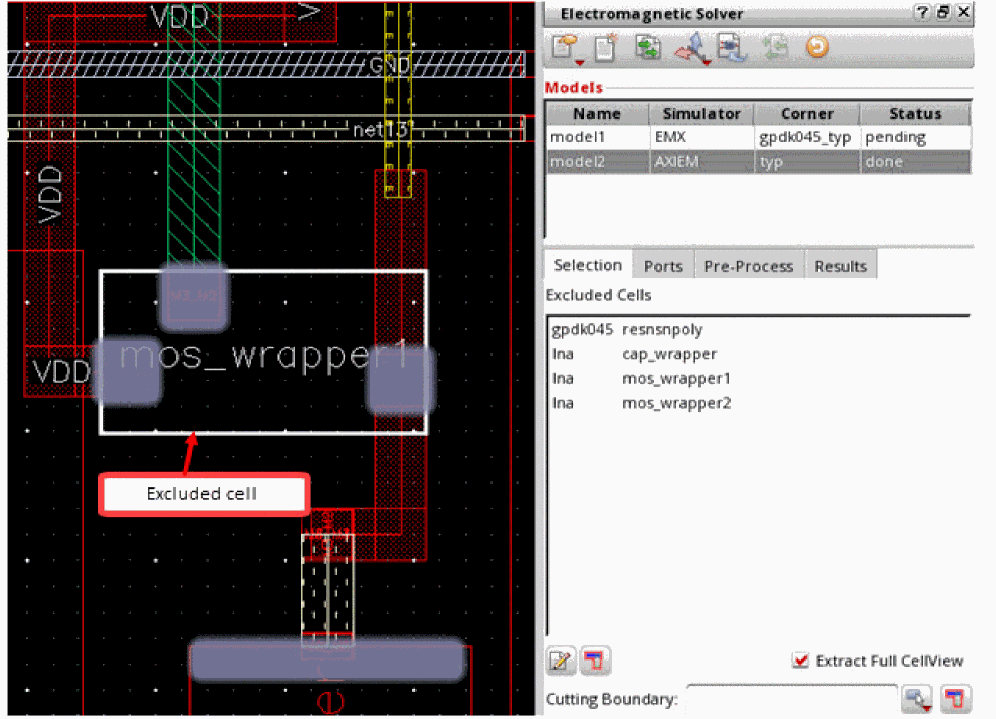

Creating an S-Parameter Model for a Layout-Driven Flow
When you do not have a schematic or the connectivity information in the schematic is incomplete, you can run the layout-driven flow in which the entire information is taken from the layout. After the model is simulated, you can use the S-parameter file to create a schematic view that you can use to run simulations.
To create models in this scenario, you can use the full cellview and exclude the instances of active cells, such as MOSFET, NFET, PFET, or BJT. When you exclude these instances, automatic port generation creates ports on all the pins of the excluded cells.
To create a model for a layout-driven flow:
-
Open the layout view in Virtuoso Layout MXL and set the workspace to
Electromagnetic. -
Select Extract Full Cellview in the Electromagnetic Solver assistant.
The default list of instances, nets, and referenced models is removed from the Selection tab. -
Click Edit the list of excluded cells.
The tool looks for the cells that have a symbol view and displays their names in the Excluded Cells list.
-
Select the check boxes to the left of the cell names that you need to exclude from the model.
Alternatively, pressCtrland click the names of all the cells to be excluded. Next, right-click and choose Check. -
After the selection of the cells to be excluded is complete, click anywhere out of this list to complete editing of the list.
The Excluded Cells list shows all the cells you selected. -
(Optional) Click Select cut type to choose a shape for the cutting boundary and create a boundary to define the area to be used in the model.

-
Click Highlight shapes inside the cutting boundary except those in excluded cells and verify the shapes on the layout canvas.
-
Click Automatically generate ports on the Ports tab to generate ports for the cells in the model.
The tool uses the general rules to create ports for the included devices.
For excluded cells, it creates a port at each pin of an excluded cell. In the example below, ports are created at all three pins ofmos_wrapper1.
 - (Optional) Specify options on the Pre-Process tab to run shape simplification.
- Generate and view mesh.
-
Run simulation for the model.
After the simulation is run successfully, the status of the model is changed todoneand the path to the S-parameter file is displayed on the Results tab. -
Click Create Simulation Schematic to create a schematic using the S-Parameters.
The Create Simulation Schematic form is displayed.
-
Specify a name for the new schematic view to be created and click OK.
Virtuoso creates a new schematic cellview and adds it to the library. You can open it from the Library Manager.
This schematic contains an instance of the S-parameter port and symbols for the excluded cells. The schematic pins are created only for the layout pins that have a port. If common node net exists and is not set tognd!, a pin is created.
Conversely, if a pin on a schematic symbol has no port defined, it is connected to a net that has theEMXproperty set. When a schematic symbol pin has no corresponding S-parameter port, check the EMX string property on the corresponding excluded instance in the layout. The property should be in the format pinName1=netName1 pinName2=netName2. For example, B=GND, which means you can connect pin B of the schematic symbol to the net GND. Once the property is found, check if the pin name is listed in the property. If it is, connect it to the net specified in the property. If there is no property on the instance or the pin is not part of the property, the pin is connected to the same net as the nport common node.
Return to top